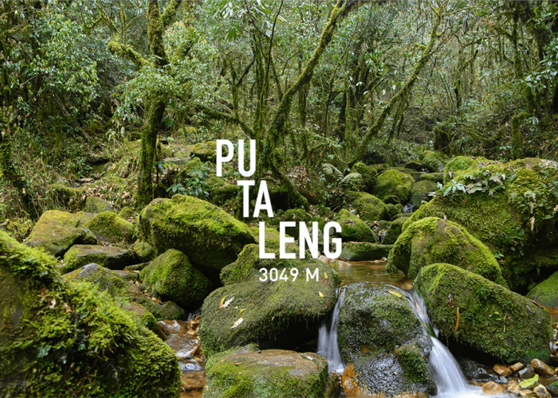
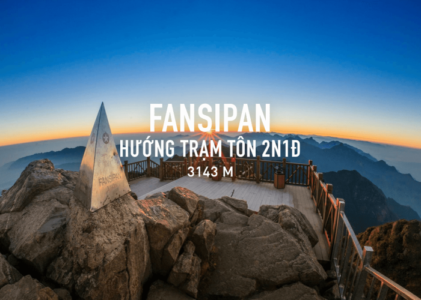

Kinh nghiệm
Kinh nghiệm trekking Pu Ta Leng lần đầu
Chuẩn bị thể lực, đồ dùng cá nhân và tinh thần trước khi bước vào hành trình leo núi dài ngày.
Đọc thêmTổng hợp bài viết về kinh nghiệm, cung đường và trang bị cần thiết cho mỗi chuyến đi.

Chuẩn bị thể lực, đồ dùng cá nhân và tinh thần trước khi bước vào hành trình leo núi dài ngày.
Đọc thêm
Danh sách các vật dụng quan trọng giúp chuyến trekking an toàn, gọn nhẹ và thoải mái hơn.
Đọc thêm
Gợi ý những cung trekking nổi bật dành cho người yêu thiên nhiên và thích thử thách bản thân.
Đọc thêm
Các nguyên tắc cơ bản giúp bạn hạn chế rủi ro khi di chuyển trong rừng núi.
Đọc thêm
Balo phù hợp giúp phân bổ trọng lượng tốt và giảm mệt mỏi khi leo núi nhiều giờ.
Đọc thêm
Cung đường nổi bật với biển mây, rừng già và khung cảnh nguyên sơ đặc trưng vùng Tây Bắc.
Đọc thêm